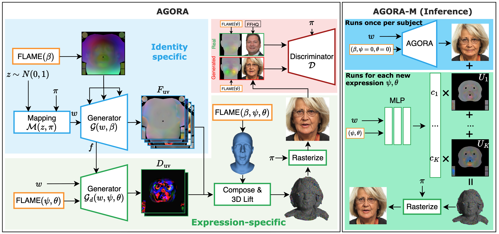

AGORA-M running in your browser via WebGL2, driven by a pre-recorded expression sequence. Animations are being calculated in your browser! Click an identity to switch. Drag to orbit.
* Some visual artifacts may be present due to a mismatch between the vanilla 3DGS rendering used in the WebGL viewer and the anti-aliased gsplat rasterizer used during training. We are working on fixing this.
The generation of high-fidelity, animatable 3D human avatars remains a core challenge in computer graphics and vision, with applications in VR, telepresence, and entertainment. Existing approaches based on implicit representations like NeRFs suffer from slow rendering and dynamic inconsistencies, while 3D Gaussian Splatting (3DGS) methods are typically limited to static head generation, lacking dynamic control.
We bridge this gap by introducing AGORA, a novel framework that extends 3DGS within a generative adversarial network to produce animatable avatars. Our approach combines spatial shape conditioning with a dual-discrimination training strategy that supervises both rendered appearance and synthetic geometry cues, improving expression fidelity and controllability. To enable practical deployment, we further introduce a simple inference-time approach that extracts Gaussian blendshapes and reuses them for animation on-device.
AGORA generates avatars that are visually realistic and precisely controllable, achieving state-of-the-art performance among animatable generative head-avatar methods. We further introduce AGORA-M, a mobile-optimized variant that achieves 560 FPS on a single GPU and 60 FPS on mobile phones, marking a significant step toward practical, high-performance digital humans.

AGORA builds upon the UV-based GGHEAD framework, extending it into a fully animatable 3D GAN. The generator produces canonical 3DGS attributes — position, scale, rotation, color, opacity — in UV space from a latent code and FLAME shape parameters. A separate lightweight deformation branch takes low-resolution feature maps from the main generator and predicts per-Gaussian attribute residuals conditioned on FLAME expression ψ and jaw pose θ, which are composed with the canonical attributes to produce the final animated avatar. Gaussian positions are obtained by 3D lifting: interpolating base positions from the articulated FLAME mesh and adding predicted offsets, anchoring the 3DGS to the parametric mesh geometry.
A key challenge in animatable generation is injecting shape priors (e.g., craniofacial proportions) without collapsing identity diversity. Naively injecting the FLAME shape code β into the mapping network causes the intermediate latent to be dominated by β, suppressing z-driven variation. Instead, we derive a UV-aligned map of the shape-isolated deformation field — the difference between a posed FLAME mesh with a given shape and a canonical reference — apply per-sample variance normalization, and concatenate it with the generator's block features. This injects shape biases spatially, where they matter geometrically, while preserving the stochasticity of the latent code.
Training with only an image-based discriminator is insufficient for precise expression control. Following Next3D, we condition the discriminator on the target expression by concatenating the rendered image with a synthetic FLAME mesh rendering. Crucially, we replace UV-coordinate vertex coloring with a displacement-based signal: vertices are colored by their expression-isolated displacement from the neutral pose, giving the discriminator a fine-grained geometric cue to penalize expression deviations. This dual-discrimination scheme significantly improves mouth articulation and high-intensity expression fidelity.
Running the full generation network per frame is too expensive for mobile deployment. We propose AGORA-M: an offline step samples N tuples from the trained model, computes posed-minus-neutral Gaussian attribute residuals, and factorizes them via SVD to obtain K shared Gaussian blendshapes. At runtime, a lightweight two-layer MLP regresses blendshape coefficients from FLAME parameters, and the final avatar is a linear combination of the neutral avatar and the blendshapes. Identity precomputation runs once; expression replay costs only the MLP forward pass and one linear blend — achieving 560 FPS on a single GPU and 60 FPS on mobile phones with minimal quality trade-off.
Generated avatars (seeds 0-32) reenacted by the driving video on the left.
Avatars generated from single images, driven by the video on the left.
Comparison of avatar reenactment methods. Left: Ours, Center: Driving video, Right: Next3D.
This work builds upon GGHEAD, whose UV-based 3D Gaussian generation framework served as the foundation for our approach. We are grateful for their excellent codebase and insights.
We acknowledge EG3D for its pioneering work in 3D-aware generative models, and Next3D, which inspired our dual-discrimination design. We also thank the authors of GAIA — a recent work that independently explores expression-conditioned 3DGS generation — for sharing visual results and enabling direct comparison.
We are also grateful to the developers of gsplat for their efficient and easy-to-use Gaussian splatting library, which we use for rasterization.
The interactive browser demo builds upon the WebGL2 3D Gaussian Splatting viewer by antimatter15, which we extended with a GPU compute pipeline for real-time blendshape evaluation.
@article{fazylov2025agora,
author = {Fazylov, Ramazan and Zagoruyko, Sergey and Parkin, Aleksandr and Lefkimmiatis, Stamatis and Laptev, Ivan},
title = {{AGORA: Adversarial Generation Of Real-time Animatable 3D Gaussian Head Avatars}},
journal = {arXiv preprint arXiv:2512.06438},
year = {2025}
}